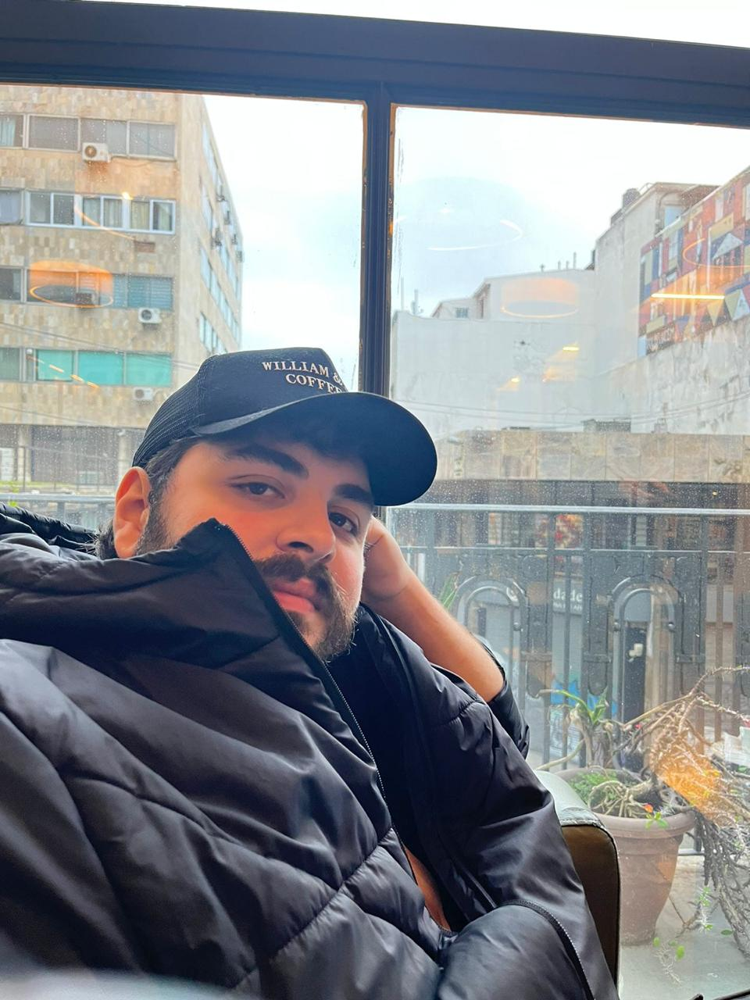

We currently have 200 members. A full list can be viewed below, as well as member profiles.

T. Sivarani
Affiliation: Indian Institute of Astrophysics
Research focus: Spectroscopic followup of metal poor stars, stellar activity, variable stars
Most excited about from Rubin:
Variability map of stellar population across HR diagram

Emily Hunt
Affiliation: LSW, Center for Astronomy of Heidelberg University (Germany)
Research focus: Using machine learning to blindly catalogue Milky Way star clusters
Most excited about from Rubin:
All the stars! Rubin will be best-in-class for studying fainter, low-mass stars.
Something you want people to know about you: I spend a lot of time playing guitar and doing studio & live sound engineering

Marta Reina-Campos
Affiliation: Canadian Institute for Theoretical Astrophysics
Research focus: Numerical simulations of galaxy formation with star clusters
Most excited about from Rubin:
Rubin is going to allow us to map the extended spatial distributions of GCs around galaxies, and we can use it estimate the underlying mass distribution.
Something you want people to know about you: I like having a creative and manual hobby on the side, currently I'm learning how to sew.
Lucas Pulgar-Escobar
Affiliation: Universidad de Concepción
Research focus: Machine learning on star clusters, pre-main sequence stars.
Most excited about from Rubin:
I'm excited about the idea of studying fainter sources and getting to know the tiny members of star clusters, perhaps they can be a bit shy!
Something you want people to know about you: I love music, traveling, exploring cities like a tourist, and getting lost in their streets! I also still count with my fingers.
Ana Ennis
Affiliation: Waterloo Centre for Astrophysics/Perimeter Institute
Research focus: Extragalactic globular clusters
Most excited about from Rubin:
Rubin will provide a homogeneous survey with huge wavelength coverage, allowing us to map globular clusters across different types of galaxies at larger distances than before. We will learn so much about how they form and it will unlock their potential as tracers of stellar populations!
Something you want people to know about you: I spend most of my free time reading, knitting or playing video games! I'm also slowly developing a passion for birdwatching because there's so many cool birds in Canada
Pedro Ribeiro Floriano
Affiliation: Federal University of Rio Grande do Sul - UFRGS and BPG-LSST
Research focus: Galaxy evolution, star clusters, resolved stellar populations
Most excited about from Rubin:
I'm excited for the results and studies that will follow from the great capability of the telescope to scan the night sky with efficiency. It will, for sure, revolutionize observational astronomy.
Something you want people to know about you: I'm a big fan of 70s/80s rock music, and a gym enthusiast among other sports.

Pedro Lopes
Affiliation: Federal University of Rio Grande do Sul - UFRGS and BPG-LSST
Research focus: Star Clusters, (Extragalactic) Globular Clusters, Galactic Formation and Evolution
Most excited about from Rubin:
To be able to have a lot of new and deeper information about the night sky and the mapping of the sky that will enable us to expand our research.
Something you want people to know about you: I really enjoy watching movies, listening to music and travelling.
Nicholas Schweder Souza
Affiliation: Universidade Federal do Paraná (UFPR), BPG-LSST
Research focus: Galaxy formation and evolution, star clusters: currently trying to improve the detection of extragalactic GCs
Most excited about from Rubin:
To try to explore its unprecedented sea of data using clever techniques, hopefully unrevealing new patterns and insights!
Something you want people to know about you: I love music in all of its forms, linguistics, hiking, etc. :)